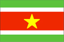

{kind=link}


![[Country map of Suriname]](../maps/ns-map.jpg)
| Suriname |  |
|
| | |
| Introduction |
Background: Independence from the Netherlands was granted in 1975. Five years later the civilian government was replaced by a military regime that soon declared a socialist republic. It continued to rule through a succession of nominally civilian administrations until 1987, when international pressure finally brought about a democratic election.
| Geography |
Location: Northern South America, bordering the North Atlantic Ocean, between French Guiana and Guyana
Geographic coordinates: 4 00 N, 56 00 W
Map references: South America
Area:
total:
163,270 sq km
land:
161,470 sq km
water:
1,800 sq km
Area - comparative: slightly larger than Georgia
Land boundaries:
total:
1,707 km
border countries:
Brazil 597 km, French Guiana 510 km, Guyana 600 km
Coastline: 386 km
Maritime claims:
exclusive economic zone:
200 nm
territorial sea:
12 nm
Climate: tropical; moderated by trade winds
Terrain: mostly rolling hills; narrow coastal plain with swamps
Elevation extremes:
lowest point:
unnamed location in the coastal plain -2 m
highest point:
Wilhelmina Gebergte 1,286 m
Natural resources: timber, hydropower, fish, kaolin, shrimp, bauxite, gold, and small amounts of nickel, copper, platinum, iron ore
Land use:
arable land:
0%
permanent crops:
0%
permanent pastures:
0%
forests and woodland:
96%
other:
4% (1993 est.)
Irrigated land: 600 sq km (1993 est.)
Natural hazards: NA
Environment - current issues: deforestation as timber is cut for export; pollution of inland waterways by small-scale mining activities
Environment - international agreements:
party to:
Biodiversity, Climate Change, Endangered Species, Law of the Sea, Marine Dumping, Nuclear Test Ban, Ozone Layer Protection, Ship Pollution, Tropical Timber 94, Wetlands
signed, but not ratified:
none of the selected agreements
Geography - note: mostly tropical rain forest; great diversity of flora and fauna that, for the most part, is increasingly threatened by new development; relatively small population, most of which lives along the coast
| People |
Population: 431,303 (July 2000 est.)
Age structure:
0-14 years:
32% (male 70,871; female 67,466)
15-64 years:
62% (male 137,209; female 131,905)
65 years and over:
6% (male 10,907; female 12,945) (2000 est.)
Population growth rate: 0.65% (2000 est.)
Birth rate: 21.08 births/1,000 population (2000 est.)
Death rate: 5.69 deaths/1,000 population (2000 est.)
Net migration rate: -8.92 migrant(s)/1,000 population (2000 est.)
Sex ratio:
at birth:
1.05 male(s)/female
under 15 years:
1.05 male(s)/female
15-64 years:
1.04 male(s)/female
65 years and over:
0.84 male(s)/female
total population:
1.03 male(s)/female (2000 est.)
Infant mortality rate: 25.06 deaths/1,000 live births (2000 est.)
Life expectancy at birth:
total population:
71.36 years
male:
68.71 years
female:
74.14 years (2000 est.)
Total fertility rate: 2.5 children born/woman (2000 est.)
Nationality:
noun:
Surinamer(s)
adjective:
Surinamese
Ethnic groups: Hindustani (also known locally as "East Indians"; their ancestors emigrated from northern India in the latter part of the 19th century) 37%, Creole (mixed white and black) 31%, Javanese 15%, "Maroons" (their African ancestors were brought to the country in the 17th and 18th centuries as slaves and escaped to the interior) 10%, Amerindian 2%, Chinese 2%, white 1%, other 2%
Religions: Hindu 27.4%, Muslim 19.6%, Roman Catholic 22.8%, Protestant 25.2% (predominantly Moravian), indigenous beliefs 5%
Languages: Dutch (official), English (widely spoken), Sranang Tongo (Surinamese, sometimes called Taki-Taki, is native language of Creoles and much of the younger population and is lingua franca among others), Hindustani (a dialect of Hindi), Javanese
Literacy:
definition:
age 15 and over can read and write
total population:
93%
male:
95%
female:
91% (1995 est.)
| Government |
Country name:
conventional long form:
Republic of Suriname
conventional short form:
Suriname
local long form:
Republiek Suriname
local short form:
Suriname
former:
Netherlands Guiana, Dutch Guiana
Data code: NS
Government type: constitutional democracy
Capital: Paramaribo
Administrative divisions: 10 districts (distrikten, singular - distrikt); Brokopondo, Commewijne, Coronie, Marowijne, Nickerie, Para, Paramaribo, Saramacca, Sipaliwini, Wanica
Independence: 25 November 1975 (from Netherlands)
National holiday: Independence Day, 25 November (1975)
Constitution: ratified 30 September 1987
Legal system: based on Dutch legal system incorporating French penal theory
Suffrage: 18 years of age; universal
Executive branch:
chief of state:
President Jules WIJDENBOSCH (since 14 September 1996); Vice President Pretaapnarian RADHAKISHUN (since 14 September 1996); note - the president is both the chief of state and head of government
head of government:
President Jules WIJDENBOSCH (since 14 September 1996); Vice President Pretaapnarian RADHAKISHUN (since 14 September 1996); note - the president is both the chief of state and head of government
cabinet:
Cabinet of Ministers appointed by the president from among the members of the National Assembly
elections:
president and vice president elected by the National Assembly or, if no presidential or vice presidential candidate receives a constitutional majority vote in the National Assembly after two votes, by the larger People's Assembly (869 representatives from the national, local, and regional councils), for five-year terms; election last held 23 May 1996; runoff election held 5 September 1996 (next to be held NA May 2000)
note:
widespread demonstrations during the summer of 1999 led to the calling of elections a year early
election results:
Jules WIJDENBOSCH elected president; percent of legislative vote - NA; National Assembly failed to elect the president; results reflect votes cast by the People's Assembly - Jules WIJDENBOSCH (NDP) received 438 votes, Ronald VENETIAAN (NF) received 407 votes
Legislative branch:
unicameral National Assembly or National Assemblee (51 seats; members are elected by popular vote to serve five-year terms)
elections:
last held 23 May 1996 (next to be held NA May 2000)
election results:
percent of vote by party - NA; seats by party - NDP 16, NF 14, BVD 5, KTPI 5, Pertjaja Luhur 4, The Progressive Development Alliance 3, DA '91 2, OPDA 2
note:
widespread demonstrations during the summer of 1999 led to the calling of elections a year early
Judicial branch: Court of Justice, justices nominated for life
Political parties and leaders: Alternative Forum or AF [Rick VAN RAVENSWAY]; Democratic Alternative '91 or DA '91 (a coalition of the AF and BEP, formed in January 1991) [Winston JESSURUN]; Democratic Party or DP [Frank PLAYFAIR]; Independent Progressive Democratic Alternative or OPDA [Joginder RAMKHILAWAN]; National Democratic Party or NDP [Desire BOUTERSE]; National Party of Suriname or NPS [Ronald VENETIAAN]; Naya Kadam [Marijke DJWALAPERSAD]; Party for Brotherhood and Unity in Politics or BEP [Caprino ALLENDE]; Party for Renewal and Democracy or BVD [Atta MUNGRA]; Party of National Unity and Solidarity or KTPI [Willy SOEMITA]; Party of the Federation of Land Workers or PVF [Jwan SITAL]; Pertjaja Luhur [Paul SOMOHARDJO]; Progressive Reform Party or VHP [Jaggernath LACHMON]; Progressive Workers' and Farm Laborers' Union or PALU [Ir Iwan KROLIS]; Reformed Progressive Party or HPP [Harry KISOENSINGH]; Suriname Labor Party or SPA [Fred DERBY]; The New Front or NF (a coalition of four parties NPS, VHP, SPA, and Pertjaja Luhur) [Ronald R. VENETIAAN]; The Progressive Development Alliance (a combination of two parties, HPP and PVF) [Harry KISOENSINGH]
Political pressure groups and leaders: General Liberation and Development Party or ABOP [Ronnie BRUNSWIJK]; Mandela Bushnegro Liberation Movement [Leendert ADAMS]; Tucayana Amazonica [Alex JUBITANA, Thomas SABAJO]; Union for Liberation and Democracy [Kofi AFONGPONG]
International organization participation: ACP, Caricom, ECLAC, FAO, G-77, IADB, IBRD, ICAO, ICFTU, ICRM, IDB, IFAD, IHO, ILO, IMF, IMO, Intelsat (nonsignatory user), Interpol, IOC, ITU, LAES, NAM, OAS, OIC, OPANAL, OPCW, PCA, UN, UNCTAD, UNESCO, UNIDO, UPU, WCL, WHO, WIPO, WMO, WTrO
Diplomatic representation in the US:
chief of mission:
Ambassador Arnold Theodoor HALFHIDE
chancery:
Suite 460, 4301 Connecticut Avenue NW, Washington, DC 20008
telephone:
[1] (202) 244-7488
FAX:
[1] (202) 244-5878
consulate(s) general:
Miami
Diplomatic representation from the US:
chief of mission:
Ambassador Dennis K. HAYS
embassy:
Dr. Sophie Redmondstraat 129, Paramaribo
mailing address:
P. O. Box 1821, American Embassy Paramaribo, Department of State, Washington, DC, 20521-3390
telephone:
[597] 472900, 477881, 476459
FAX:
[597] 420800
Flag description: five horizontal bands of green (top, double width), white, red (quadruple width), white, and green (double width); there is a large, yellow, five-pointed star centered in the red band
| Economy |
Economy - overview: The economy is dominated by the bauxite industry, which accounts for more than 15% of GDP and 70% of export earnings. After assuming power in the fall of 1996, the WIJDENBOSCH government ended the structural adjustment program of the previous government, claiming it was unfair to the poorer elements of society. Tax revenues fell as old taxes lapsed and the government failed to implement new tax alternatives. By the end of 1997, the allocation of new Dutch development funds was frozen as Surinamese Government relations with the Netherlands deteriorated. Economic growth slowed in 1998, with decline in the mining, construction, and utility sectors. Rampant government expenditures, poor tax collection, a bloated civil service, and reduced foreign aid in 1999 contributed to the fiscal deficit, estimated at 11% of GDP. The government sought to cover this deficit through monetary expansion, which led to a dramatic increase in inflation and exchange rate depreciation. Suriname's economic prospects for the medium term will depend on renewed commitment to responsible monetary and fiscal policies and to the introduction of structural reforms to liberalize markets and promote competition.
GDP: purchasing power parity - $1.48 billion (1999 est.)
GDP - real growth rate: -1% (1999 est.)
GDP - per capita: purchasing power parity - $3,400 (1999 est.)
GDP - composition by sector:
agriculture:
13%
industry:
22%
services:
65% (1998 est.)
Population below poverty line: NA%
Household income or consumption by percentage share:
lowest 10%:
NA%
highest 10%:
NA%
Inflation rate (consumer prices): 170% (1999 est.)
Labor force: 100,000
Labor force - by occupation: agriculture NA%, industry NA%, services NA%
Unemployment rate: 20% (1997)
Budget:
revenues:
$393 million
expenditures:
$403 million, including capital expenditures of $34 million (1997 est.)
Industries: bauxite and gold mining, alumina and aluminum production, lumbering, food processing, fishing
Industrial production growth rate: 6.5% (1994 est.)
Electricity - production: 2.008 billion kWh (1998)
Electricity - production by source:
fossil fuel:
24.65%
hydro:
75.35%
nuclear:
0%
other:
0% (1998)
Electricity - consumption: 1.867 billion kWh (1998)
Electricity - exports: 0 kWh (1998)
Electricity - imports: 0 kWh (1998)
Agriculture - products: paddy rice, bananas, palm kernels, coconuts, plantains, peanuts; beef, chickens; forest products; shrimp
Exports: $406.1 million (f.o.b., 1998)
Exports - commodities: alumina, aluminum, crude oil, lumber, shrimp and fish, rice, bananas
Exports - partners: Norway 24%, Netherlands 23.8%, US 21.7%, France 7.3%, Japan 4.9%, UK (1998 est.)
Imports: $461.4 million (f.o.b., 1998)
Imports - commodities: capital equipment, petroleum, foodstuffs, cotton, consumer goods
Imports - partners: US 31.2%, Netherlands 17.3%, Trinidad and Tobago 16.1%, Japan 4.3%, UK 4%, Brazil (1998)
Debt - external: $175.6 million (1998 est.)
Economic aid - recipient: Netherlands provided $37 million for project and program assistance, European Development Fund $4 million, Belgium $2 million (1998)
Currency: 1 Surinamese guilder, gulden, or florin (Sf.) = 100 cents
Exchange rates:
Surinamese guilders, gulden, or florins (Sf.) per US$1 - 995 (December 1999), 710 (May 1999), 850 (January 1999); central bank midpoint rate: 639.50 (1st Qtr 1999), 401.00 (1998), 401.00 (1997), 401.26 (1996), 442.23 (1995); parallel rate: 1,325 (December 1999), 2000 (May 1999), 800 (December 1998), 412 (December 1995)
note:
beginning in July 1994, the central bank midpoint exchange rate was unified and became market determined; during 1998, the exchange rate splintered into four distinct rates; in January 1999 the government floated the guilder, but subsequently fixed it when the black-market rate plunged
Fiscal year: calendar year
| Communications |
Telephones - main lines in use: 56,844 (1996)
Telephones - mobile cellular: 3,671 (1995)
Telephone system:
international facilities good
domestic:
microwave radio relay network
international:
satellite earth stations - 2 Intelsat (Atlantic Ocean)
Radio broadcast stations: AM 4, FM 13, shortwave 1 (1998)
Radios: 300,000 (1997)
Television broadcast stations: 3 (plus seven repeaters) (1997)
Televisions: 63,000 (1997)
Internet Service Providers (ISPs): 1 (1999)
| Transportation |
Railways:
total:
166 km (single track)
standard gauge:
80 km 1.435-m gauge
narrow gauge:
86 km 1.000-m gauge
Highways:
total:
4,530 km
paved:
1,178 km
unpaved:
3,352 km (1996 est.)
Waterways: 1,200 km; most important means of transport; oceangoing vessels with drafts ranging up to 7 m can navigate many of the principal waterways
Ports and harbors: Albina, Moengo, New Nickerie, Paramaribo, Paranam, Wageningen
Merchant marine:
total:
3 ships (1,000 GRT or over) totaling 3,432 GRT/4,525 DWT
ships by type:
cargo 1, container 1, petroleum tanker 1 (1999 est.)
Airports: 46 (1999 est.)
Airports - with paved runways:
total:
5
over 3,047 m:
1
914 to 1,523 m:
1
under 914 m:
3 (1999 est.)
Airports - with unpaved runways:
total:
41
1,524 to 2,437 m:
1
914 to 1,523 m:
5
under 914 m:
35 (1999 est.)
| Military |
Military branches: National Army (includes small Navy and Air Force elements), Civil Police
Military manpower - availability:
males age 15-49:
120,152 (2000 est.)
Military manpower - fit for military service:
males age 15-49:
70,580 (2000 est.)
Military expenditures - dollar figure: $8.5 million (FY97 est.)
Military expenditures - percent of GDP: 1.6% (FY97 est.)
| Transnational Issues |
Disputes - international: claims area in French Guiana between Litani Rivier and Riviere Marouini (both headwaters of the Lawa); claims area in Guyana between New (Upper Courantyne) and Courantyne/Koetari [Kutari] Rivers (all headwaters of the Courantyne)
Illicit drugs: transshipment point for South American drugs destined mostly for Europe